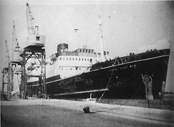
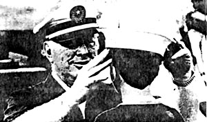

I. THE ADVENT
 The Royal Scotman at anchor in Corfu Harbour, late 1968 |
|
" 'There was a ship,' quoth he" ("The Ancient Mariner", S. T. Coleridge 1772-1834) |
 The Royal Scotman at anchor in Corfu Harbour, late 1968 |
|
" 'There was a ship,' quoth he" ("The Ancient Mariner", S. T. Coleridge 1772-1834) |
When the sinister looking black-painted scientologist ship, "Royal Scotman" (a 320 foot former Irish Channel passenger ferry), flying the improbable flag of Sierra Leone, anchored in the Corfu roads one warm and sunny day in August 1968, she aroused little interest amongst the busy flow of cruise ships and coastal vessels plying in and out of the harbour.
Even when the passengers and crew went ashore in their para-military black shirted uniforms, little initial curiosity was aroused and word went round that this was just another of those floating schools.
In fact, however, I had already been requested to keep an eye open for a vessel named S.S. Royal Scotsrnan which was reported to have "sailed from Southampton on the 28th November 1967 for Brest, ostensibly bound for a pseudo-scientific expedition in the Mediterranean". There had been sensational reports about "young persons detained under duress."
Although it did not require Sherlock Holmes or Hercule Poirot to deduce that the former British registered S.S. "Royal Scotsman" and the newly arrived "Royal Scotman" flying the flag of Sierra Leone were one and the same vessel, I would nevertheless have welcomed the assistance of these sleuths in the problems which were later to beset me.
At this stage my knowledge of Scientology was confined to the denouncement of this cult publicised in Hansard on the 25th July 1968, a photocopy of which is reproduced on page 16.
But I was shortly to acquire far fuller enlightenment on this sect from a horrifying article which appeared in "Life Magazine", entitled "A True Life Nightmare". Here, writer Alan Levy engaged in exploring Scientology tells of his traumatic experiences when "without the faintest idea of what I was getting into I embarked on an adventure in mind-bending" - which took him via the Manhattan hotel HQ of Scientology in New York and the London HQ in Fitzroy Street (now removed to Tottenham Court Road) to the 30-room, Georgian, St. Hill Manor, the Mecca of Scientology, situated in a 57-acre estate near East Grinstead in Sussex "which could have passed for SMERSH headquarters". At this juncture Alan Levy made his escape before being completely brainwashed though he tells how his journalistic involvement shattered his mental equilibrium to near insanity,*
* C.f. the case of Julie Titchbourne who was chatted up by "field staff" (covert agents who get 10% commission on recruits' fees) and quickly induced into the sausage machine in the form of what is known as "raw meat". The initial grinding, as Julie explains, consists of sitting knee to knee with a priest for hours on end eyes closed, followed by hours of "command drill" with eyes open obeying simple movements - do this, do that, etc. As leading Californian psychologist, Margaret Singer, who interviewed Julie explains, "These routines can split the personality into a severe disassociated state and the recruits are hooked before they realise what is happening. The next step erases the boundary between reality and fantasy." Julie, after parting with some $3,000 (saved to go to University), was told she could go "on staff" whilst taking university level courses and ended up working 60-80 hours per week at a salary of less than $10. Raw meat now becomes a "robot sausage" feeling a superior and elite member of the Universe.
Fortunately her parents succeeded in rescuing her from her trance, and, in April 1980, a Portland, Oregon, jury found the Church's conduct so outrageously fraudulent that it awarded her some $2 million damages.
|

|
Here let us pause for a moment to take a glimpse at Alan Levy's Profile of Scientology and get some idea of what this so called religion is all about. Its founder, Lafayette Ron Hubbard, El Ron to his flock, was born in Nebraska in 1911. He never graduated from college although he has on occasions claimed a degree. A prolific and popular writer of science fiction before 1941, he served as a junior U.S. Naval Officer during the war at the end of which he was admitted into the psychiatric wing* of a U.S. Naval Hospital. He promoted himself to the rank of Commodore on acquisition of the "Royal Scotsman" in 1967.
From his boyhood onward Hubbard claimed to have witnessed miracles performed by holy men in India and China, but long association with them convinced him that they did not know how they did it so he sought to find out from nuclear philosophy. This distillation of applied wisdom first emerged in 1950 as a 435-page best selling book on the Science of Mental Health called Dianetics.
The basic discovery of Dianetics was the Engram, a word Hubbard borrowed from biology, but applied to scientology it means a picture image imprinted on a cell - like a microgroove on a record, by an experience involving partial unconsciousness and some pain.
Engrams beset man right from the beginning. "Birth is a pretty aberrative affair," writes El Ron. "Papa becomes passionate and baby has the sensation of being put in a running washing machine." He also holds a "Non-Germ Theory of Disease" that many of men's ills are Engramic, including arthritis, dermatitis, allergies, asthma, some coronary difficulties, eye trouble, migraine headaches, tuberculosis, cancer and the common cold.
According to Hubbard's doctrine, the human being has two minds, the Analytical, which is like a perfect computer, and the Reactive, which takes care of situations like dodging an approaching taxi. As a result of all stimuli it receives the Reactive mind is one mass of Engrams feeding the otherwise perfect Analytical mind incorrect data. The final aim is to erase these Engrams or, in scientology jargon, to go CLEAR. In Dianetics this process took too long so Hubbard evolved into scientology inventing the E-meter to discover what really happens behind all these hang-ups and inhibitions.
The E-meter is a battery powered machine equipped with a gauge and a moving needle and several control knobs leading to two tins like beer cans. It works like a lie detector but it is described as a truth detector.
The needle records emotional distress. When the needle is still it means that the patient has come CLEAN on a particular question, but when it is swaying freely and easily as opposed to jerking and jumping it means that the patient has achieved RELEASE on the whole subject - releasing his guilt.
* "The Guardian" (12 Feb 1980) referring to one of several thousand documents seized by the F.B.I. put on public display in Washington and which relates to Hubbard's first wife Sara, reports:
"According to the Washington document Mrs. Hubbard claimed in 1951 that her husband was 'Paranoid schizophrenic and should be committed; that he had subjected her to 'systematic torture' by beating and strangling her and denying her sleep. She said he had told her to commit suicide."
A number of sessions of E Meter auditing by a minister of 'religion' at a fee of $800 (in 1962) are required to become CLEAR. (Hubbard's definition of CLEAR is "a person who is at knowing and willing cause over his mind"). The next stage, the ultimate goal, is to become an Operating Thetan (or OT) which involves graduating through eight distinct levels at a 1968 fee of a further $3525 though Alan Levy tells us that it can cost as much as $15,000 to graduate through grade VIII with all the extra hidden expenses involved. (Hubbard's definition of an OT is "a being who is knowing and willing cause over matter, energy, space, time, thought and life. This state is far more than becoming just a superman, IT IS THE IDEAL STATE for an individual.")
These high costs have the effect of turning many young scientologists into permanent parts of the apparatus. To finance their own advance studies they take low paying jobs with the 'org' as it is known and in the end find themselves alienated from life outside scientology.*
By designating his doctrine as a religion, a move he, himself, termed as "historic breakthrough into the Realm of the Human Spirit", Hubbard freed scientology from a number of legal strictures and, by registering his 'Church' as a charity, freed it from a number of tax restrictions.
One of the features of this tax-deductible multi-million dollar industry which, as we have seen, has been castigated by the British Government for feeding on the minds of he young and vulnerable, relates to the indoctrination of children. Alan Levy is not the first to draw attention to the enormity that small children are ordered to "disconnect" from their families, which means sever relations. Such estrangements are often deep and lasting, leaving heartsick parents no longer able to speak rationally to their children, if, indeed, ever able to speak to them again. **
But let us now return to the scene in Corfu harbour in September 1969 where the Aberdeen trawler, "Avon River", and the yacht, "Enchanter", have joined the flagship, "Royal Scotman", and let us watch and see in the next chapter how the Nebraska-born prophet, worshipped by his flock, is soon to be idolised by hungry Corfiots as a money spinning Croesus and fawned on by a section of an unsuspecting Corfiot society which had never been so duped since conned by Casanova*** some two and a half centuries previously.
* On the "Royal Scotman" dedicated scientologists "paying their way" by doing menial and semi-skilled jobs were receiving about $2.00 per week for working 10 hours a day.
** "The News of the World" reports the typical distressing story of Mrs. Ann Stainforth who received a letter from Zandra, her 18-year old daughter, who had become a scientologist and gone to work as a clerk at the cult's headquarters, Saint Hill Manor.
The letter said, "This is to inform you that unless you have some training and processing I will disconnect from you as I feel that you are invalitative of me and Scientology.
"I am willing to help you in any way if you want, but until then I am not going to communicate with you or accept any communication from you.
"I am doing this of my own free will and for my own betterment.
"Love Zandra."
*** "History of My Life" by Giacomo Casanova (Vol.11).
EXTRACT FROM HANSARD of 25 July 1968 referred to on page 11 and which was forwarded to the Greek Government following a request to the British Government.
Mr. K. Robinson: During the past two years, Her Majesty's Government have become increasingly concerned at the spread of scientology in the United Kingdom. Scientology is a pseudo-philosophical cult introduced into this country some years ago from the United States and bases its world headquarters in Fast Grinstead. It has been described by its founder, Mr. L. Ron Hubbard, as 'the world's largest mental health organisation".
On 6th March, l967, scientology was debated in the house on a Motion for the Adjournment, when I made it clear that my right hon. Friend the Home Secretary and I considered the practice of scientology to be potentially harmful to its adherents. Since the Anderson Report on Scientology (published in 1965 in the State of Victoria, Australia), coupled with the evidence already available in this country, sufficiently established the general undesirability and potential dangers of the cult, we took the view that there was little point in holding another inquiry.
Although this warning received a good deal of public notice at the time, the practice of scientology has continued, and indeed expanded, and Government Departments, Members or Parliament and local authorities have received numerous complaints about it.
The Government are satisfied, having reviewed all the available evidence, that scientology is socially harmful. It alienates members of families from each other and attributes squalid and disgraceful motives to all who oppose it*. Its authoritarian principles and practices are a potential menace to the personality and well-being of those so deluded as to become its followers: above all, its methods can be a serious danger to the health of those who submit to them. There is evidence that children are now being indoctrinated.
There is no power under existing law to prohibit the practice of scientology: but the Goverment have concluded that it is so objectionable that it would be right to take all steps within their power to club its growth.
* C.f. the case of Paulette Cooper reported in "The Guardian" 9 Feb l980:
On May 19.1973, a New York journalist, Paulette Cooper, was indicted before a federal grand jury on charges of sending bomb threats to the Church of Scientology.
In October 1973, in a legal move born of despair, Ms Cooper agreed to take a truth serum test to prove her innocence. It worked and the state shelved the charges.
Four years later Ms Cooper was telephoned at her Manhattan apartment by the FBI. They had seized documents from the Church of Scientology and had learned that she had been framed by the sect over the bomb threats and had been the victim of a carefully planned operation aimed at driving her insane or having her gaoled.
Ms Cooper qualified as a target of Scientology's dirty tricks operations because she had been an uncompromising critic of Scientology since December 1969, when her first article on the followers of L. Ron Hubbard was published by a British women's magazine. The holder of a master's degree in psychology, Ms Cooper had written a book about the sect, The Scandal of Scientology, published in 1971.
The seized Scientology documents show that in the course of their campaign of vilification against Ms Cooper the scientologists:
The seized Scientology documents have now been placed on public record in Washington.


Last updated 11 January 1997
by Chris Owen (co@nvg.unit.no)